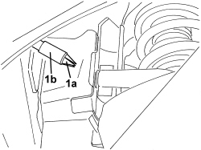
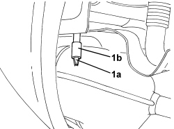
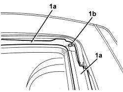

7030B38 SLIDING ROOF DRAINAGE PIPES (WATER DRAIN) - CHECK
- Path
- Procedures > 70 FITTINGS > 7030 SUN ROOF/GLASS PANEL > 7030B SLIDING ROOF > 7030B38 SLIDING ROOF DRAINAGE PIPES (WATER DRAIN) - CHECK
- Kind
- repair procedure (removal / refitting; the operation number is the code)
- Applies to
- all engines; all production periods
- Interactive page
- https://sloeber94.github.io/elrnDB/alfa/159/en/#/939004830
Applies to: all engines; all production periods
- Position the vehicle on a lift.
Op. 7030B18 SLIDING ROOF GLASS PANEL - R+R
- Operate the sun roof so that the guides are in the fully open position.
- Remove any foreign bodies (leaves, etc.) from the sun roof housing.
- Remove the four wheels.
Op. 4450B14 WHEELS (FOUR) - R+R
Op. 7055B44 LEFT REAR WHEEL ARCH LINER - R.R
Op. 7055B45 RIGHT REAR WHEEL ARCH LINER - R.R
Op. 7055B90 LEFT FRONT WHEEL ARCH LINER - R.R.
Op. 7055B91 RIGHT FRONT WHEEL ARCH LINER - R.R.
1. Working behind the front wheels, blow through with compressed air in the lower ends (1a) of the front drainage pipes (1b).

Applies to: all engines; all production periods
1. Working behind the rear wheels, blow through with compressed air in the lower ends (1a) of the rear drainage pipes (1b).

Applies to: all engines; all production periods
1. Remove any extraneous material from the channels (1a) and the drainage openings (1b) in the sun roof housing.

Applies to: all engines; all production periods
- Introduce small amounts of water into the drainage openings and channels and check that it comes out of the pipes.
Op. 7055B91 RIGHT FRONT WHEEL ARCH LINER - R.R.
Op. 7055B90 LEFT FRONT WHEEL ARCH LINER - R.R.
Op. 7055B45 RIGHT REAR WHEEL ARCH LINER - R.R
Op. 7055B44 LEFT REAR WHEEL ARCH LINER - R.R
Topics linked from this page (6)
- 4450B14 WHEELS (FOUR) - R+R
- 7030B18 SLIDING ROOF GLASS PANEL - R+R
- 7055B44 LEFT REAR WHEEL ARCH LINER - R.R
- 7055B45 RIGHT REAR WHEEL ARCH LINER - R.R
- 7055B90 LEFT FRONT WHEEL ARCH LINER - R.R.
- 7055B91 RIGHT FRONT WHEEL ARCH LINER - R.R.